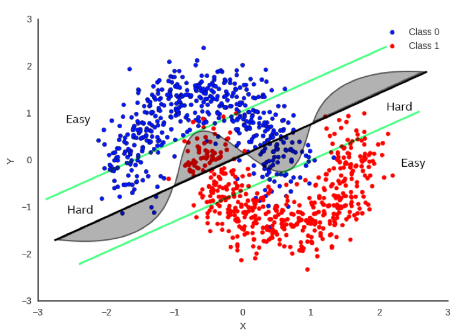

Early Exit Inference
While Deep Neural Networks benefit from a large number of layers, it's often the case that many data points in classification tasks can be classified accurately with much less work. There have been several studies recently regarding the idea of exiting before the normal endpoint of the neural network. Panda et al in Conditional Deep Learning for Energy-Efficient and Enhanced Pattern Recognition points out that a lot of data points can be classified easily and require less processing than some more difficult points and they view this in terms of power savings. Surat et al in BranchyNet: Fast Inference via Early Exiting from Deep Neural Networks look at a selective approach to exit placement and criteria for exiting early.
Why Does Early Exit Work?
Early Exit is a strategy with a straightforward and easy to understand concept Figure #fig(boundaries) shows a simple example in a 2-D feature space. While deep networks can represent more complex and expressive boundaries between classes (assuming we’re confident of avoiding over-fitting the data), it’s also clear that much of the data can be properly classified with even the simplest of classification boundaries.

Data points far from the boundary can be considered "easy to classify" and achieve a high degree of confidence quicker than do data points close to the boundary. In fact, we can think of the area between the outer straight lines as being the region that is "difficult to classify" and require the full expressiveness of the neural network to accurately classify it.
Example code for Early Exit
Both CIFAR10 and ImageNet code comes directly from publically available examples from Pytorch. The only edits are the exits that are inserted in a methodology similar to BranchyNet work.
Deeper networks can benefit from multiple exits. Our examples illustrate both a single and a pair of early exits for CIFAR10 and ImageNet, respectively.
Note that this code does not actually take exits. What it does is to compute statistics of loss and accuracy assuming exits were taken when criteria are met. Actually implementing exits can be tricky and architecture dependent and we plan to address these issues.
Heuristics
The insertion of the exits are ad-hoc, but there are some heuristic principals guiding their placement and parameters. The earlier exits are placed, the more agressive the exit as it essentially prunes the rest of the network at a very early stage, thus saving a lot of work. However, a diminishing percentage of data will be directed through the exit if we are to preserve accuracy.
There are other benefits to adding exits in that training the modified network now has backpropagation losses coming from the exits that affect the earlier layers more substantially than the last exit. This effect mitigates problems such as vanishing gradient.
Early Exit Hyperparameters
There are two parameters that are required to enable early exit. Leave them undefined if you are not enabling Early Exit:
-
--earlyexit_thresholds defines the thresholds for each of the early exits. The cross entropy measure must be less than the specified threshold to take a specific exit, otherwise the data continues along the regular path. For example, you could specify "--earlyexit_thresholds 0.9 1.2" and this implies two early exits with corresponding thresholds of 0.9 and 1.2, respectively to take those exits.
-
--earlyexit_lossweights provide the weights for the linear combination of losses during training to compute a signle, overall loss. We only specify weights for the early exits and assume that the sum of the weights (including final exit) are equal to 1.0. So an example of "--earlyexit_lossweights 0.2 0.3" implies two early exits weighted with values of 0.2 and 0.3, respectively and that the final exit has a value of 1.0-(0.2+0.3) = 0.5. Studies have shown that weighting the early exits more heavily will create more agressive early exits, but perhaps with a slight negative effect on accuracy.
CIFAR10
In the case of CIFAR10, we have inserted a single exit after the first full layer grouping. The layers on the exit path itself includes a convolutional layer and a fully connected layer. If you move the exit, be sure to match the proper sizes for inputs and outputs to the exit layers.
ImageNet
This supports training and inference of the ImageNet dataset via several well known deep architectures. ResNet-50 is the architecture of interest in this study, however the exit is defined in the generic resnet code and could be used with other size resnets. There are two exits inserted in this example. Again, exit layers must have their sizes match properly.
References
Priyadarshini Panda, Abhronil Sengupta, Kaushik Roy. Conditional Deep Learning for Energy-Efficient and Enhanced Pattern Recognition, arXiv:1509.08971v6, 2017.Surat Teerapittayanon, Bradley McDanel, H. T. Kung. BranchyNet: Fast Inference via Early Exiting from Deep Neural Networks, arXiv:1709.01686, 2017.